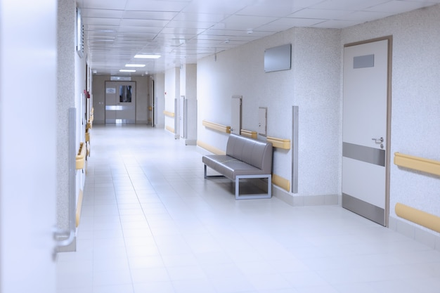

О нас
Городская Больница №1 была основана в 1972 году в городе Кокшетау. За более чем 50 лет работы мы стали одним из главных медицинских учреждений Акмолинской области. Каждый год к нам обращаются тысячи пациентов из города и близлежащих районов.
В больнице работает более 200 врачей и медицинских работников. Среди них есть специалисты с большим стажем, кандидаты медицинских наук и врачи высшей квалификационной категории. Все сотрудники регулярно проходят курсы повышения квалификации.
У нас 300 коек и несколько специализированных отделений: кардиология, хирургия, неврология, педиатрия, офтальмология и стоматология. Каждое отделение оснащено современным оборудованием для точной диагностики и лечения.
В 2015 году была проведена масштабная реконструкция здания больницы. Обновили все палаты, коридоры и операционные залы. В 2020 году открыли новое диагностическое отделение с аппаратами МРТ и КТ.